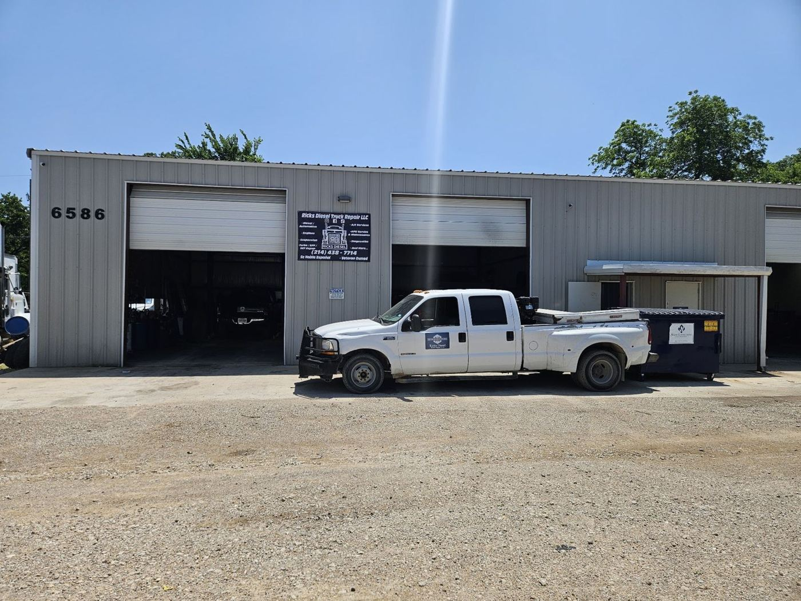
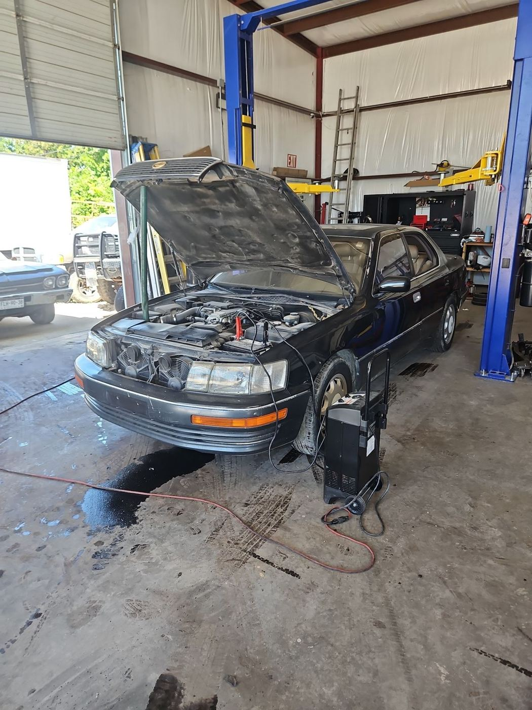

Section 05
Veteran-owned. Family-run.

Rick’s Diesel Truck Repair
A diesel and truck repair shop at 6586 Dick Price Rd in Fort Worth. Customers describe Rick as honest, patient and knowledgeable, the kind of mechanic who explains the problem and teaches you how to keep your truck running. One reviewer notes it is a veteran-owned business that stands behind its work.
Talk to Rick